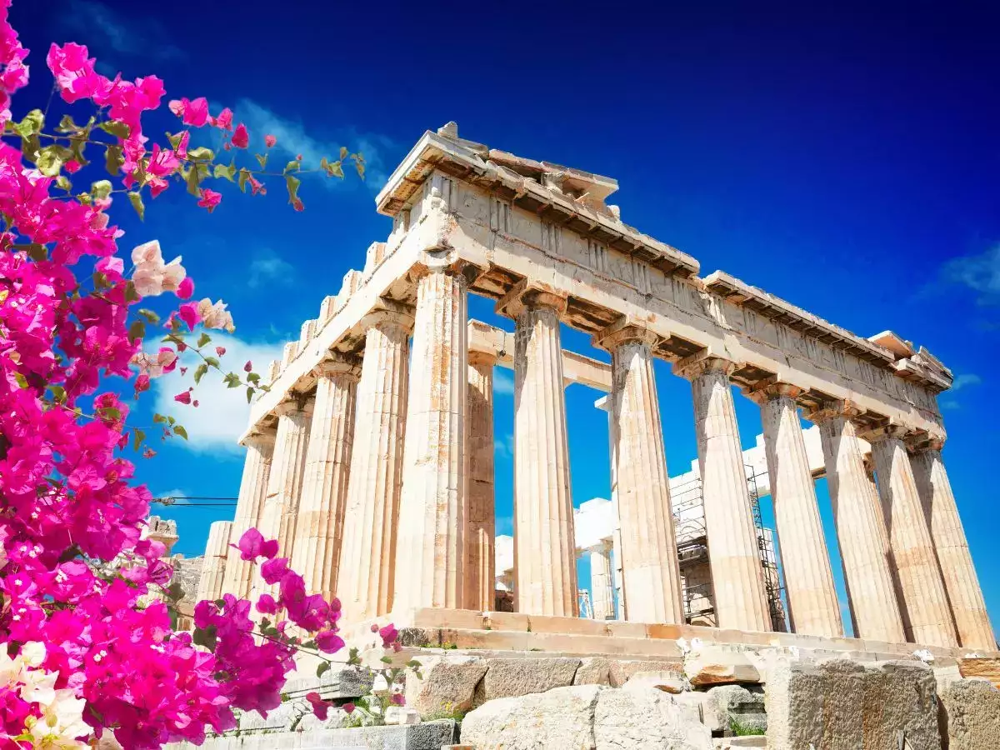
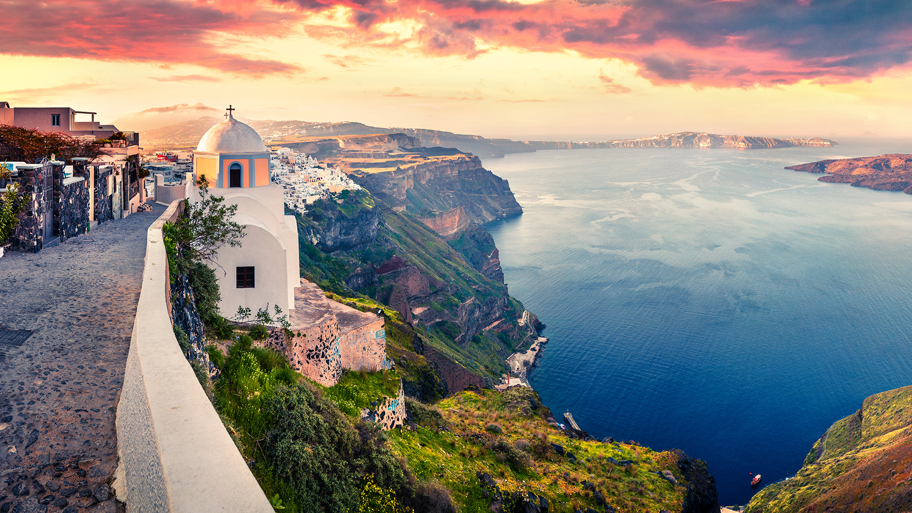
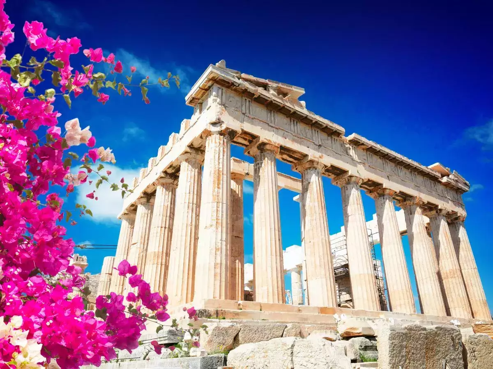
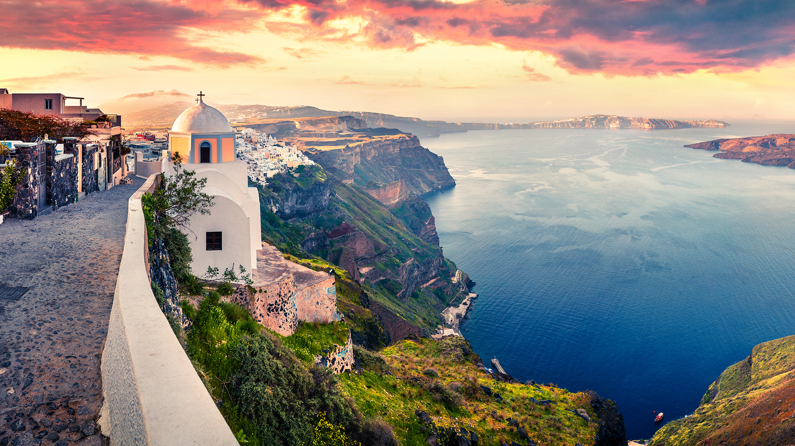

Greece
About
Greece, known for its rich history and stunning landscapes, is a treasure trove of archaeological sites, pristine beaches, and vibrant culture. The birthplace of democracy and philosophy, Greece's cities and islands offer a journey through ancient ruins and myths. Explore Athens' Acropolis, relax on the beaches of Santorini, or delve into the mysteries of Delphi.
Places you should visit
Athens
Welcome to Athens, the heart of Greece where ancient stories and modern life come together. As the capital city, Athens is a mix of old and new, with famous landmarks and a lively atmosphere. Discover the Acropolis, a historic site with the Parthenon, an important Greek building. Walk around Plaka, an old part of the city with small streets and cozy cafes. Monastiraki Square is a busy place where you can feel the city's spirit. Don't miss the Acropolis Museum, showcasing Athens' history.
Athens isn't just about the past—it's a lively city with vibrant markets and local crafts. Explore the bustling markets, like Varvakios, filled with fresh produce and unique finds. Athens welcomes you to immerse yourself in its rich history, local markets, and vibrant city life.
Attractions in Athens
Santorini
Welcome to the enchanting island of Santorini, a picturesque haven in the Aegean Sea that captivates visitors with its timeless beauty and distinctive charm. Renowned for its iconic architecture featuring dazzling white buildings clinging to the cliffs, Santorini offers a postcard-perfect setting against the backdrop of the azure sea. Wander through the narrow streets of Oia and Fira, where traditional blue-domed churches, charming boutiques, and inviting tavernas create a delightful atmosphere. The captivating blend of Cycladic architecture and vibrant bougainvillea-filled corners makes every stroll an exploration of Greek authenticity. Santorini's allure extends beyond its charming villages to its unique geological features. Formed by the remnants of an ancient volcanic caldera, the island boasts black sand beaches and dramatic cliffs that add a touch of drama to the serene surroundings. Immerse yourself in the warmth of the Mediterranean sun, whether lounging on the distinctive shores or sailing along the crystalline waters. Indulge your senses in the local culinary scene, where the world-famous Assyrtiko wine and delectable Mediterranean dishes take center stage. As the sun dips below the horizon, witness the legendary Santorini sunset, casting a magical palette of colors across the sky—a truly unforgettable experience. Whether you seek a romantic getaway, cultural exploration, or simple relaxation, Santorini invites you to revel in its idyllic ambiance. Welcome to a haven where time seems to stand still, and every moment is an opportunity to create lasting memories in this Greek paradise.
Attractions in Santorini
Delphi
Welcome to Delphi, a captivating destination steeped in ancient mythology and historical significance. Nestled on the slopes of Mount Parnassus, Delphi was once considered the center of the world in Greek mythology. Explore the archaeological site, where the Temple of Apollo and the Delphi Theater stand as timeless remnants of a bygone era. Immerse yourself in the mystical aura of the Oracle of Delphi, discover the treasures within the Delphi Archaeological Museum, and stroll along the Sacred Way. Beyond its historical allure, Delphi boasts breathtaking views of the surrounding landscape, making it a harmonious blend of cultural richness and natural beauty. As you wander through the remnants of ancient glory, Delphi invites you to unravel the mysteries of the past and embrace the enchantment of this UNESCO World Heritage Site.